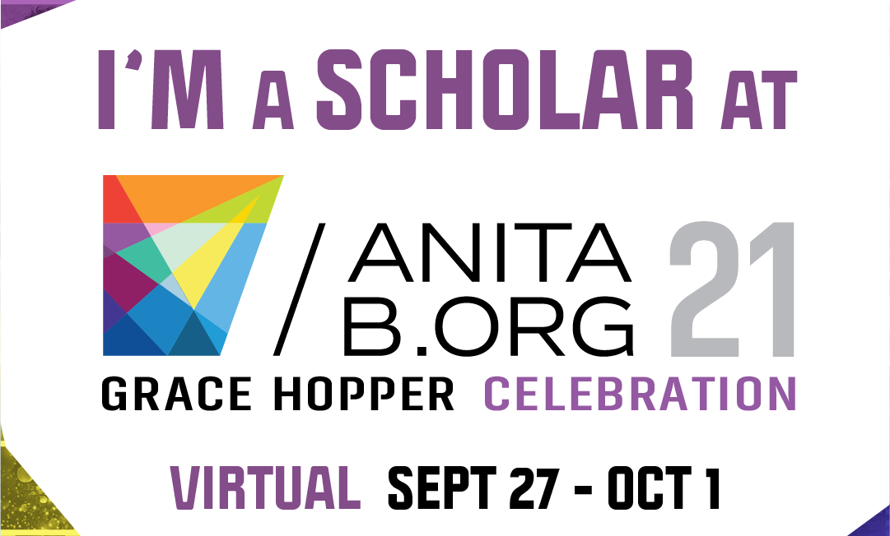

The Grace Hopper Celebration 2021
In 2021, I attended my first ever Grace Hopper Celebration as a GHC Student Scholar. The theme was #DareTo..., a rallying cry to celebrate daring achievements and diverse innovations.
What is the Grace Hopper Celebration?
GHC is the world's largest gathering of women in technology, organized every year by AnitaB.org. It has keynotes, workshops, competitions, track meetups, an open-source contribution day, career and sponsor booths, interviews, networking events and more. In 2021 it was held virtually because of the pandemic.
Applying for the student scholarship
Anyone interested in tech can buy a ticket, but you can also apply for a scholarship to attend. Applications opened around April and asked for:
- Two short paragraphs on why you want to attend, what you hope to get out of it, and your community involvement.
- A letter of recommendation from a professor.
- A detailed CV and applicant information.
Tips
- Be specific and personal. Answer exactly what's asked and show how attending will help you. Research the conference, the year's theme, and the opportunities you're looking for, and weave them in.
- Show your passion in a specific area of tech, and what you'd bring to the conversation.
- Talk about community. They want people who'll encourage others to attend too.
- Your recommendation letter matters. Ask a professor who knows you well enough to write something personal.
It took me about a month to finish the application. Results came out in July for the conference in September, and I was thrilled to be selected!

My experience
The celebration ran from September 27 to October 1, 2021, across several platforms, with schedules shared over email and Slack. We uploaded our resumes to a database that recruiters used to reach out for interviews, and could connect directly with hundreds of sponsors. I already had an internship lined up for summer 2022, so I focused on connecting with universities for graduate admissions.
The sessions ran at night for me (daytime in the US), but I learned so much and the networking was really fun. Some of what I attended:
- Pre-GHC Virtual Networking and Beyond, with Alaina G. Levine
- Pre-GHC Meet the Sponsor series: Red Hat, Epic Games
- The GHC Scholars Lounge
- Women of Color in Technical Roles Lounge
- Data Science track meetup
- Wellbeing at Work: Interns and New Grads
- 1:1 meetings with universities including Stanford, Brown and UMich
- The #DareToDance celebration
It was amazing to meet so many women who are like me yet come from such different backgrounds, and senior leaders gave us invaluable advice. The scholarship also came with a year of AnitaB.org Premium Membership, with webinars, content, and a global community of mentors.
Making the most of the conference
Before
- Update your LinkedIn. Everyone looks at it, and it's your first impression. Mention that you're attending in your headline!
- Submit to the resume database early. Recruiters start looking early, and may email you directly for interviews.
- Do your research. Pick the companies and universities you want to talk to, mark the sessions you care about, and put them on your calendar.
During
- Network actively on LinkedIn, Slack and Discord, and keep an eye on notifications.
- Make an impression. Cameras on, clear audio, and join the conversation.
- Visit sponsor booths and register your interest so they can reach out later.
- Schedule 1:1 meetings. It's the best way to learn about companies and universities and meet people who can help.
Grace Hopper is a chance for women to look at the bigger picture, celebrate each other, and share what we've learned from our different journeys.
Thank you, AnitaB.org, for the wonderful opportunity!